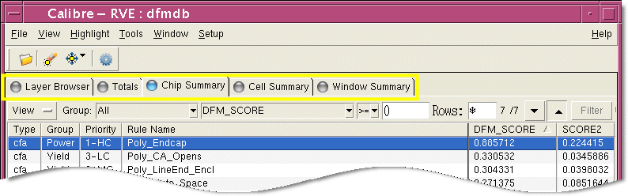

Writing Rules That Display in DFM Report Card
The Calibre RVE for DFM user interface is designed to display DFM check and score data in a report card format.
This format simplifies the task of interpreting DFM results and planning how to improve the design under investigation. The tabular format of the DFM Report Card provides designers with multiple views of results analysis as follows:
Table Rows — Types of errors.
Table Columns — Impact of the errors.
Tabbed Pages — Locations of errors.
The DFM Report Card functionality is driven by a set of special-purpose (reserved) annotations—see “DFM Report Card Controls” for complete information. In order for DFM results to display properly, the rule writer must insert commands that generate the required annotations. This topic describes how to add annotations to a DFM database, which annotations to use, and what values to use.
Prerequisites
For best results you should make a working copy of the Calibre CFA tutorials and example kits (eKits).
Try It!

Writing Critical Feature Analysis Rule Checks Tutorial and Example Kit
Includes the documentation and data for writing CFA rule checks. The procedures provide a hands-on introduction to the concepts described in the “Assessment Metrics” in the Calibre YieldAnalyzer and YieldEnhancer User’s and Reference Manual.
Go to this page on Support Center to download the eKit (Documentation tab, Document Types=Getting Started Guide). The link goes to the latest release.
Try It!
Calibre Critical Feature Analysis Tutorial and Example Kit
Includes documentation and data for performing Critical Feature Analysis (CFA) with the Calibre YieldAnalyzer and Calibre YieldEnhancer tools. This tutorial walks you through building an analysis database, assessing design quality, locating and prioritizing fixes for the worst problems, and locating and prioritizing fixes for areas most likely to fail.
Go to this page on Support Center to download the eKit (Documentation tab, Document Types=Getting Started Guide). The link goes to the latest release.
At any time you can run the tutorials to see first hand how the annotations in the checks translate into report card elements.
Procedure
- Decide how you want to display
scores to your user.
In the CFA tutorials and example kits, the annotations in the rules resulted in the following DFM Report Card:
- How many tabs do you need?
Each tab in the DFM Report Card provides a different way to investigate where errors occur. Of the tabs you see, only the Layers tab is visible by default. Each additional tab provide users a different way of reviewing check results:
Chip Summary — Displays chip-wide scores for each check. It allows users to understand the overall impact of rule violations on manufacturability.
Cell Summary — Displays scores calculated on a cell-by-cell basis. It allows users to understand how individual cells impact manufacturability.
Window Summary — Displays scores calculated on a window-by-window basis. It allows users to identify the areas on the chip that are most likely to fail.
Total — Displays scores that summarize the impact of multiple related checks.
- How many columns do you need?
The columns displayed in the DFM Report Card provide designers with multiple ways to interpret the effect of the rule violations on yield and manufacturability. There are two types of columns: default and optional.
Default — Sort mechanisms that help designers zero in on the data that is important to them. While these columns are always visible, they do not always contain data. It is up to the rule writer to supply the column data in the form of annotations.
Optional — Metrics that report on the errors that were found. Metrics are simply expressions for calculating a score indicating the relative impact of the errors. Examples of some very simple metrics include:
Count — The number of individual errors found.
Area — The area affected.
Normalized Area — The percentage of the area under investigation that is affected.
Optional columns are represented on every tab except the Layers tab. The number of default columns shown in the report card varies according to the tab that is selected and the number of characteristics you choose to feature.
Total and Chip Summary — Contain four default columns: Type, Group, Priority, and Rule Name.
Cell Summary — Contains two default columns: Cell Name and Instance Count.
Window Summary — Contains one default column: Window Id.
In addition, each of these tabs contain the same number of optional columns, generated as needed to display composite scores calculated based on characteristics you decide are important. In the case of the CFA tutorials, three optional columns represent the scores before and after Calibre YieldEnhancer tools improved the design, plus a score showing actual improvement.
- What tips or explanations
do you want to display?
The bottom of the report card contains a text box that displays the message associated with the selected check or score. This message is typically a description of a score or a suggested design modification that corrects a problem.
- How many tabs do you need?
- Write the checks that identify
DFM errors.
A rule file that generates a report card-compliant DFM database can be viewed as containing two types of rule checks:
The rule checks that identify errors.
The rule checks that translate errors into scores.
As this tutorial is focused on displaying DFM results, not writing DFM checks, assume you have written the following rule:
width_distance = INTERNAL M1 <= 0.2 width_distance_prop = DFM PROPERTY width_distance [DISTANCE = EW(width_distance)]The first rule generates a new layer containing “errors” on M1 where a geometry has a width less than or equal to 0.2 microns. The second rule generates a copy of that layer with a property attached to each error, reporting on the actual width.
- Use the DFM RDB command
to write these results to the DFM database:
DFM RDB width_distance_prop "mydfm.rdb" ALL CELLSAlthough this tutorial describes the steps for generating a DFM database, you must use the DFM RDB command to write geometries to that database. The DFM RDB command does not generate an RDB when the rule file is evaluated using calibre -dfm; it instead writes to the DFM database.
- For each tab that you want
to display in the DFM Report Card, write a rule check to calculate
the scores. Assume you are interested in the number of errors found.
The basic rule check takes the following form:
DFM ANALYZE width_distance [COUNT(width_distance) >= 0] RDB ONLY DV COORD NULL- If you want to display the Chip Summary tab, use DFM Analyze to
calculate the full-chip score based on the check results:
DFM ANALYZE width_distance [COUNT(width_distance) >= 0] // DFM Score for Chip RDB ONLY DV COORD NULL - If you want to display the Cell Summary tab, use DFM Analyze
to calculate cell-by-cell scores based on the check results:
DFM ANALYZE [COUNT(width_distance) >= 0] BY CELL NOPSEUDO // DFM Score by Cell RDB ONLY DV COORD NULLNotice that the commands are the same except that this one uses the BY CELL partitioning method.
- If you want to display the Window Summary tab, use DFM Analyze to
calculate window-by-window scores based on the check results:
DFM ANALYZE [COUNT(width_distance) >= 0] WINDOW WIN_X WIN_Y // DFM Score by Window RDB ONLY DV COORD NULLwhere WIN_X and WIN_Y are variables that define the window size in the x and y directions, respectively.
Note:Notice that the commands are the same except that this one uses the WINDOW partitioning method.
The DFM RDB and DFM Analyze commands created in steps 3 and 4 form the basic code block you can work with for the remainder of this tutorial.
DFM RDB width_distance_prop "mydfm.rdb" ALL CELLS DFM ANALYZE width_distance [COUNT(width_distance) >= 0] // DFM Score for Chip RDB ONLY DV COORD NULL DFM ANALYZE width_distance [COUNT(width_distance) >= 0] BY CELL NOPSEUDO // DFM Score by Cell RDB ONLY DV COORD NULL DFM ANALYZE width_distance [COUNT(width_distance) >= 0] WINDOW WIN_X WIN_Y // DFM Score by Window RDB ONLY DV COORD NULL - If you want to display the Chip Summary tab, use DFM Analyze to
calculate the full-chip score based on the check results:
- Copy the boilerplate statements
below and paste them at the end of each of DFM RDB and DFM Analyze
commands in your basic code block.
ANNOTATE [DFM_RULE = ""] ANNOTATE [DFM_DESCRIPTION = ""] ANNOTATE [DFM_LEVEL = ""] ANNOTATE [DFM_TYPE = ""] ANNOTATE [DFM_GROUP = ""] ANNOTATE [DFM_PRIORITY = ""] ANNOTATE [DFM_BIN = ""] ANNOTATE [DFM_METRIC = ""]Your code should now look like this:
DFM RDB width_distance_prop "mydfm.rdb" ALL CELLS ANNOTATE [DFM_RULE = ""] ANNOTATE [DFM_DESCRIPTION = ""] ANNOTATE [DFM_LEVEL = ""] ANNOTATE [DFM_TYPE = ""] ANNOTATE [DFM_GROUP = ""] ANNOTATE [DFM_PRIORITY = ""] ANNOTATE [DFM_BIN = ""] ANNOTATE [DFM_METRIC = ""] DFM ANALYZE width_distance [COUNT(width_distance) >= 0] // DFM Score for Chip RDB ONLY DV COORD NULL ANNOTATE [DFM_RULE = ""] ANNOTATE [DFM_DESCRIPTION = ""] ANNOTATE [DFM_LEVEL = ""] ANNOTATE [DFM_TYPE = ""] ANNOTATE [DFM_GROUP = ""] ANNOTATE [DFM_PRIORITY = ""] ANNOTATE [DFM_BIN = ""] ANNOTATE [DFM_METRIC = ""] DFM ANALYZE width_distance [COUNT(width_distance) >= 0] BY CELL NOPSEUDO // DFM Score by Cell RDB ONLY DV COORD NULL ANNOTATE [DFM_RULE = ""] ANNOTATE [DFM_DESCRIPTION = ""] ANNOTATE [DFM_LEVEL = ""] ANNOTATE [DFM_TYPE = ""] ANNOTATE [DFM_GROUP = ""] ANNOTATE [DFM_PRIORITY = ""] ANNOTATE [DFM_BIN = ""] ANNOTATE [DFM_METRIC = ""] DFM ANALYZE width_distance [COUNT(width_distance) >= 0] WINDOW WIN_X WIN_Y // DFM Score by Window RDB ONLY DV COORD NULL ANNOTATE [DFM_RULE = ""] ANNOTATE [DFM_DESCRIPTION = ""] ANNOTATE [DFM_LEVEL = ""] ANNOTATE [DFM_TYPE = ""] ANNOTATE [DFM_GROUP = ""] ANNOTATE [DFM_PRIORITY = ""] ANNOTATE [DFM_METRIC = ""] - Edit the annotations as follows:
- DFM_RULE — Supply a descriptive name for the rule. This is the same for all four of the commands, as each is merely a different representation of a single set of data.
- DFM_DESCRIPTION — Supply the text you want displayed to the user. This should be either a description of the check or a tip for fixing this type of error. This is the same for all four of the commands, as each is merely a different representation of a single set of data. If needed, you can supply multiple descriptions.
- DFM_LEVEL —
Set this to one of: cell, chip, window, error, as follows:
For the DFM RDB command that writes the errors to the DFM database, set DFM_LEVEL = “error”.
For the DFM ANALYZE command that generates chip-wide scores, set DFM_LEVEL = “chip”.
For the DFM ANALYZE command that generates cell-by-cell scores, set DFM_LEVEL = “cell”.
For the DFM ANALYZE command that generates window-by-window scores, set DFM_LEVEL = “window”.
- DFM_TYPE — Set to a string that communicates the type of problem represented by these errors. This is the same for all four of the commands, as each is merely a different representation of a single set of data. This annotation must exist on the check data. If it is set to a null string, the Type column for this check is empty. In both tutorials, the type was the same for all errors: “cfa”.
- DFM_GROUP — Supply a string that is the name of a group to which this check belongs. This is the same for all four of the commands, as each is merely a different representation of a single set of data. When checks are assigned to groups using this annotation, users can sort or display by group. This annotation must exist on the check data. If it is set to a null string, the Group column is empty for this check.
- DFM_PRIORITY — Supply
a meaningful string that assigns a priority to this check. These
priorities provide another sort mechanism for the user. They reflect
the relative importance of fixing this type of error compared to
fixing other types of errors. This is the same for all four of the
commands, as each is merely a different representation of a single
set of data. This annotation must exist on the check data. If it
is set to a null string, the Priority column is empty for this check.
For these annotations, supply a short descriptive string. Note that the names of these annotations reflect the way they are used when reporting critical area analysis results.
- DFM_METRIC — Supply a name for the metric (or score). Metric names appear as column headers in the DFM Report Card.
Your code should now look like this:
DFM RDB width_distance_prop "mydfm.rdb" ALL CELLS ANNOTATE [DFM_RULE = "M1_narrow"] ANNOTATE [DFM_DESCRIPTION = "M1 with width less than 0.2"] ANNOTATE [DFM_DESCRIPTION = "Widen if possible"] ANNOTATE [DFM_LEVEL = "error"] ANNOTATE [DFM_TYPE = "width check"] ANNOTATE [DFM_GROUP = "metal problems"] ANNOTATE [DFM_PRIORITY = "high"] ANNOTATE [DFM_METRIC = "Simple Count"] DFM ANALYZE width_distance [COUNT(width_distance) >= 0] // DFM Score for Chip RDB ONLY DV COORD NULL ANNOTATE [DFM_RULE = "M1_narrow"] ANNOTATE [DFM_DESCRIPTION = "M1 with width less than 0.2"] ANNOTATE [DFM_DESCRIPTION = "Widen if possible"] ANNOTATE [DFM_LEVEL = "chip"] ANNOTATE [DFM_TYPE = "width check"] ANNOTATE [DFM_GROUP = "metal problems"] ANNOTATE [DFM_PRIORITY = "high"] ANNOTATE [DFM_METRIC = "Simple Count"] DFM ANALYZE width_distance [COUNT(width_distance) >= 0] BY CELL NOPSEUDO // DFM Score by Cell RDB ONLY DV COORD NULL ANNOTATE [DFM_RULE = "M1_narrow"] ANNOTATE [DFM_DESCRIPTION = "M1 with width less than 0.2"] ANNOTATE [DFM_DESCRIPTION = "Widen if possible"] ANNOTATE [DFM_LEVEL = "cell"] ANNOTATE [DFM_TYPE = "width check"] ANNOTATE [DFM_GROUP = "metal problems"] ANNOTATE [DFM_PRIORITY = "high"] ANNOTATE [DFM_METRIC = "Simple Count"] DFM ANALYZE width_distance [COUNT(width_distance) >= 0] WINDOW WIN_X WIN_Y // DFM Score by Window RDB ONLY DV COORD NULL ANNOTATE [DFM_RULE = "M1_narrow"] ANNOTATE [DFM_DESCRIPTION = "M1 with width less than 0.2"] ANNOTATE [DFM_DESCRIPTION = "Widen if possible"] ANNOTATE [DFM_LEVEL = "window"] ANNOTATE [DFM_TYPE = "width check"] ANNOTATE [DFM_GROUP = "metal problems"] ANNOTATE [DFM_PRIORITY = "high"] ANNOTATE [DFM_METRIC = "Simple Count"] - To create additional columns,
add another set of DFM Analyze operations, complete with annotations.
The code block in the previous step created one “optional” column, which displays the number of errors found. For this step, you create another column, this one reporting on the length of metal inside the area under investigation and having a width less than 0.2 microns.
- Decide how you want to calculate
the score or metric.
To calculate the length, the basic operation is as follows:
DFM ANALYZE width_distance [EC(width_distance) >= 0] RDB ONLY DV COORD NULL - Write one version of the DFM
Analyze statement for each tab.
The actual operations used would be as follows:
DFM ANALYZE width_distance [EC(width_distance) >= 0] // DFM Score for Chip RDB ONLY DV COORD NULL DFM ANALYZE width_distance[EC(width_distance) >= 0] BY CELL NOPSEUDO // DFM Score by Cell RDB ONLY DV COORD NULL DFM ANALYZE width_distance [EC(width_distance) >= 0] WINDOW WIN_X WIN_Y // DFM Score by Window RDB ONLY DV COORD NULL - Add the required annotations.
Since this set of operations is reporting on the original error
data, the only annotation you must change is the DFM_METRIC.
The final full set of code, complete with annotations, would look like this:
DFM RDB width_distance_prop "mydfm.rdb" ALL CELLS ANNOTATE [DFM_RULE = "M1_narrow"] ANNOTATE [DFM_DESCRIPTION = "M1 with width less than 0.2"] ANNOTATE [DFM_DESCRIPTION = "Widen if possible"] ANNOTATE [DFM_LEVEL = "error"] ANNOTATE [DFM_TYPE = "width check"] ANNOTATE [DFM_GROUP = "metal problems"] ANNOTATE [DFM_PRIORITY = "high"] ANNOTATE [DFM_METRIC = "Simple Count"] DFM ANALYZE width_distance [COUNT(width_distance) >= 0] // DFM Score for Chip RDB ONLY DV COORD NULL ANNOTATE [DFM_RULE = "M1_narrow"] ANNOTATE [DFM_DESCRIPTION = "M1 with width less than 0.2"] ANNOTATE [DFM_DESCRIPTION = "Widen if possible"] ANNOTATE [DFM_LEVEL = "chip"] ANNOTATE [DFM_TYPE = "width check"] ANNOTATE [DFM_GROUP = "metal problems"] ANNOTATE [DFM_PRIORITY = "high"] ANNOTATE [DFM_METRIC = "Simple Count"] DFM ANALYZE width_distance [COUNT(width_distance) >= 0] BY CELL NOPSEUDO // DFM Score by Cell RDB ONLY DV COORD NULL ANNOTATE [DFM_RULE = "M1_narrow"] ANNOTATE [DFM_DESCRIPTION = "M1 with width less than 0.2"] ANNOTATE [DFM_DESCRIPTION = "Widen if possible"] ANNOTATE [DFM_LEVEL = "cell"] ANNOTATE [DFM_TYPE = "width check"] ANNOTATE [DFM_GROUP = "metal problems"] ANNOTATE [DFM_PRIORITY = "high"] ANNOTATE [DFM_METRIC = "Simple Count"] DFM ANALYZE width_distance [COUNT(width_distance) >= 0] WINDOW WIN_X WIN_Y // DFM Score by Window RDB ONLY DV COORD NULL ANNOTATE [DFM_RULE = "M1_narrow"] ANNOTATE [DFM_DESCRIPTION = "M1 with width less than 0.2"] ANNOTATE [DFM_DESCRIPTION = "Widen if possible"] ANNOTATE [DFM_LEVEL = "window"] ANNOTATE [DFM_TYPE = "width check"] ANNOTATE [DFM_GROUP = "metal problems"] ANNOTATE [DFM_PRIORITY = "high"] ANNOTATE [DFM_METRIC = "Simple Count"] DFM ANALYZE width_distance [EC(width_distance) >= 0] // DFM Score for Chip RDB ONLY DV COORD NULL ANNOTATE [DFM_RULE = "M1_narrow"] ANNOTATE [DFM_DESCRIPTION = "M1 with width less than 0.2"] ANNOTATE [DFM_DESCRIPTION = "Widen if possible"] ANNOTATE [DFM_LEVEL = "chip"] ANNOTATE [DFM_TYPE = "width check"] ANNOTATE [DFM_GROUP = "metal problems"] ANNOTATE [DFM_PRIORITY = "high"] ANNOTATE [DFM_METRIC = "Common Run Length"] DFM ANALYZE width_distance [EC(width_distance) >= 0] BY CELL NOPSEUDO // DFM Score by Cell RDB ONLY DV COORD NULL ANNOTATE [DFM_RULE = "M1_narrow"] ANNOTATE [DFM_DESCRIPTION = "M1 with width less than 0.2"] ANNOTATE [DFM_DESCRIPTION = "Widen if possible"] ANNOTATE [DFM_LEVEL = "cell"] ANNOTATE [DFM_TYPE = "width check"] ANNOTATE [DFM_GROUP = "metal problems"] ANNOTATE [DFM_PRIORITY = "high"] ANNOTATE [DFM_METRIC = "Common Run Length"] DFM ANALYZE width_distance [EC(width_distance) >= 0] WINDOW WIN_X WIN_Y // DFM Score by Window RDB ONLY DV COORD NULL ANNOTATE [DFM_RULE = "M1_narrow"] ANNOTATE [DFM_DESCRIPTION = "M1 with width less than 0.2"] ANNOTATE [DFM_DESCRIPTION = "Widen if possible"] ANNOTATE [DFM_LEVEL = "window"] ANNOTATE [DFM_TYPE = "width check"] ANNOTATE [DFM_GROUP = "metal problems"] ANNOTATE [DFM_PRIORITY = "high"] ANNOTATE [DFM_METRIC = "Common Run Length"]
- Decide how you want to calculate
the score or metric.
- Repeat steps 2 through 7 for each additional DFM check you include in your rule file.
- Add annotations to the DFM Database statement
to define chip totals.Note:
For this tutorial, totals are not meaningful, as there is only one group and one rule check for each metric. In a production rule file, there can be many metrics and many groups, making these totals quite useful.
The easiest way to generate total scores and the Totals tab is to let the Calibre RVE for DFM Report Card calculate them for you. To do this, you annotate the database with one or more annotations named DFM_METRIC_TOTAL_METHOD.
This annotation required three arguments in a specific order:
(metric, calculation_method, cell_ref_total)
metric — Must match the DFM_METRIC annotation associated with one or more checks. This defines which values to include in this total.
calculation_method — Defines how totals should be calculated based on the per check scores for each of the checks.
cell_ref_total — Defines how the report card calculates a total score for all the placements of a single cell. This is a second score calculated in addition to the cell_score, which is calculated using the calculation_method to combine the scores for each of the By Cell checks.
For more information about the DFM_METRIC_TOTAL_METHOD, refer to “Database-Level Annotations”.